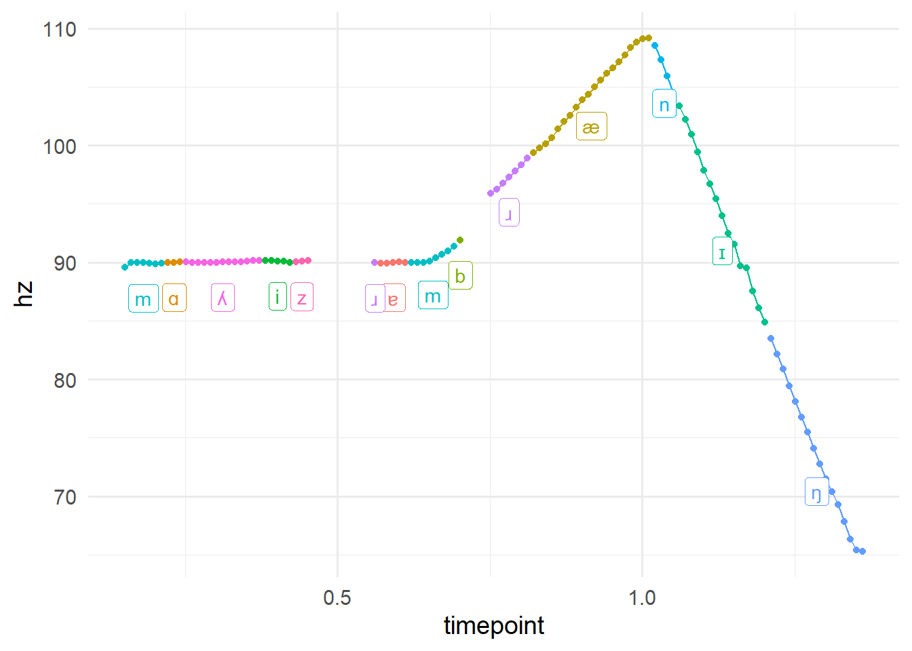
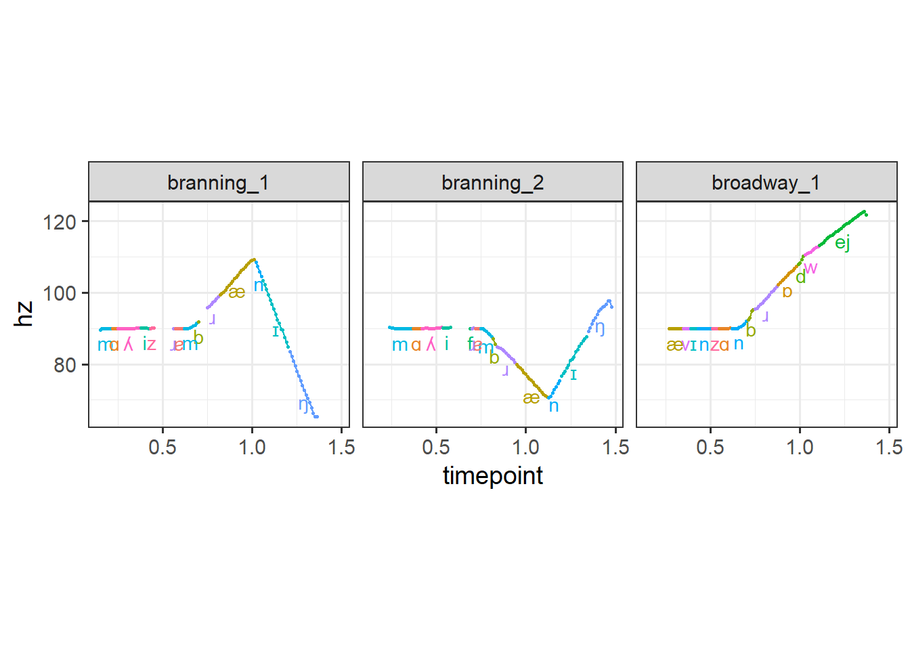
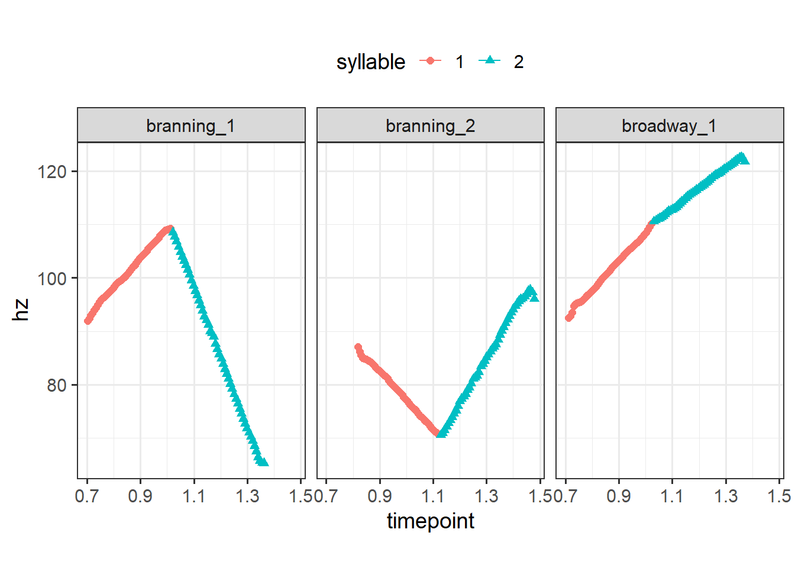
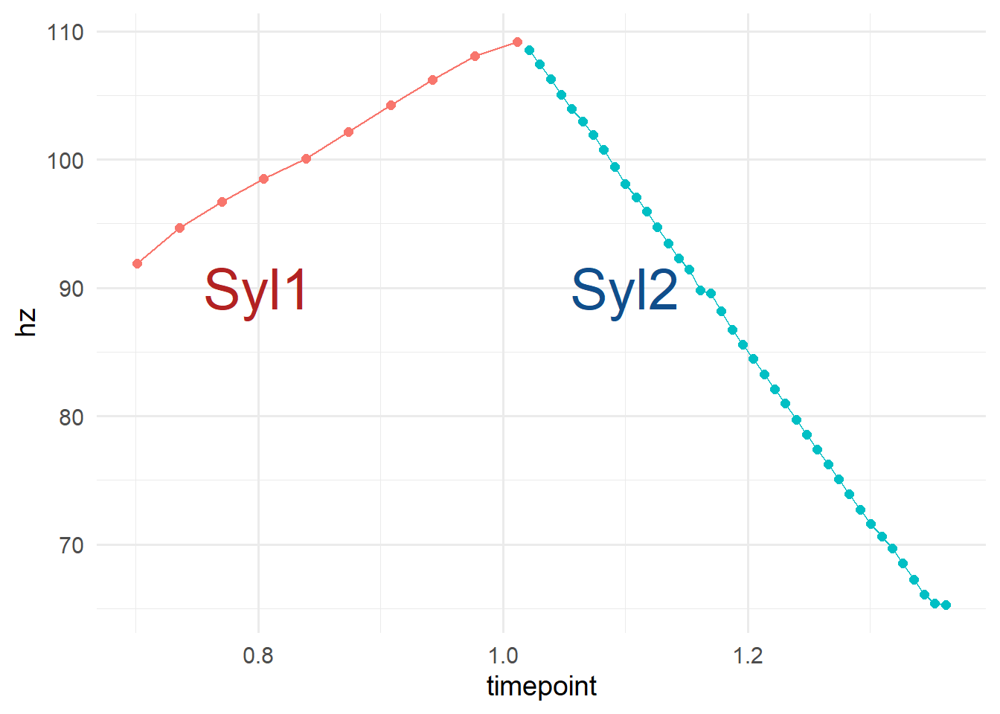

Code
# devtools or remotes can be used to install from github
devtools::install_github("tidyverse/dplyr")
install.packages('rPRaat')
devtools::install_github('tsostarics/sosprosody')A colleague of mine recently asked for help with a bit of a tricky problem. Pitch contours, when extracted from an acoustic signal, come in the form of a time series of discretized pulses: a (time, frequency) point. However, these contours occur over varying parts of the spoken sentence. In other words, the rises and falls in pitch occur over different words, syllables, and phones– all of which have varying durations. If we take a pitch contour over a single word from the productions of many speakers, then time normalize them, we don’t have access to the relative durations and landmarks of the syllables that make up the token. For instance, if two speakers rise from 110Hz to 220Hz over one syllable, this rise will be much steeper if the first syllable is 30% of the time normalized duration compared to if the first syllable is 60% of the time normalized duration. The problem then becomes two related problems:
As it happens, this problem becomes fairly straightforward when using non-equi joins. These are joins (left, right, etc.) that match not merely on equivalence matching, but when more complex logical operations need to be used. In our case, we want to merge information about the pulses and their timestamps with information about the syllable boundary timestamps. We can accomplish this by joining two dataframes based on whether the pulse timestamp is between the start and end timestamps of a particular interval.
In this post, I’ll show how this can be accomplished in R using the new non-equi join functionality added to {dplyr} version 1.1. In the process, I’ll also show off some tools from the {rPraat} package and the {sosprosody} package, which I am developing to support the analyses and data processing for my dissertation work. These packages provide some useful functionality for working with PitchTier and TextGrid objects from Praat. However, this functionality can also be accomplished through any non-equi join implementation. I’m familiar with the {fuzzyjoin} package, and this post provides some additional options.
I am providing some resynthesized files here from my dissertation work, currently they’re not available publicly but will eventually be on the OSF as the work is published and presented. I won’t be discussing the details further in this post, but I’ll note that the phone labels were returned by the Montreal Forced Aligner (McAuliffe et al. (2017)) and the syllable labels were hand coded.
See below code block for installation of the most relevant packages. {dplyr} must be version 1.1/the development version (as of this writing) to allow for non-equi/fuzzy joins, and so is not (yet) part of a typical installation of tidyverse.1 Refer to below code block for installation.
# devtools or remotes can be used to install from github
devtools::install_github("tidyverse/dplyr")
install.packages('rPRaat')
devtools::install_github('tsostarics/sosprosody')Now we’ll load the packages we’ll be using.
library(dplyr) # For joins
library(rPraat) # Read functions for textgrids and pitch tiers
library(sosprosody) # Helpers for working with textgrids and pitch tiers
# These two are part of any tidyverse installation
library(ggplot2) # For plotting
library(purrr) # For mapping functionsOur goal: Associate each pitch pulse with an interval on a tier from a TextGrid.
The approach: Non-equi joins. Given a dataframe for the pitch pulses and a dataframe for a tier from a TextGrid, when a pitch pulse timepoint lies between interval_start and interval_end, join interval_start, interval_end, and the interval label.
First we’ll load our files, located in the Files directory. Because I’m working with just one example right now, I’ll write the strings out directly.
pt_file <- "Files/branning_1.PitchTier"
tg_file <- "Files/branning_1.TextGrid"Now we’ll read the PitchTier and TextGrid files into R using rPraat. The sosprosody package provides new print methods for PitchTier and TextGrid objects, which can also be seen below (these would be displayed in the console).
# The default encoding is UTF-8, but there's a common
# case where Praat encodes files with UTF-16LE
pt <- rPraat::pt.read(pt_file, encoding= "auto")
tg <- rPraat::tg.read(tg_file, encoding = "auto")branning_1.PitchTier: 108 total pitch pulses.
109| |
| OOO |
| OOO OO |
| OOOO OO |
| OOOO O |
| OO OO |
| OOOOOOOOOOOOOOOOOOOOOOOOOO OOO |
| OOO |
| OOOO |
65| OOO |
0 1.49 branning_1.TextGrid
[ words: 4/6 labeled intervals from 0 to 1.49 ]
[ phones: 15/17 labeled intervals from 0 to 1.49 ]
[ nuclear: 1/3 labeled intervals from 0 to 1.49 ]
[ syllable: 2/4 labeled intervals from 0 to 1.49 ] Now that we have access to our PitchTier and TextGrid, we can convert them into data frame representations, again using sosprosody. We’ll limit our scope right now to just the phones tier.
# TextGrid as a a dataframe
tiers <- sosprosody::textgrid_to_dataframes(tg) # List of dfs for each tier
tier_df <- tiers$phones # Extract a single tier
# Small post processing steps
tier_df$file <- gsub(".TextGrid", "", tier_df$file, perl = TRUE)
tier_df$interval_i <- seq_len(nrow(tier_df)) # Assign numeric indices
head(tier_df) file interval_start interval_end label interval_i
1 branning_1 0.0000000 0.1312844 1
2 branning_1 0.1312844 0.2200000 m 2
3 branning_1 0.2200000 0.2500000 ɑ 3
4 branning_1 0.2500000 0.3800000 ʎ 4
5 branning_1 0.3800000 0.4297910 i 5
6 branning_1 0.4297910 0.4910510 z 6# Pitchtier as a dataframe, we don't need to calculate semitones and ERBs
pt_df <- sosprosody::pitchtier_to_dataframe(pt,
add_semitones = FALSE,
add_erbs = FALSE)
head(pt_df) file timepoint hz
1 branning_1 0.1514512 89.57813
2 branning_1 0.1614512 89.96063
3 branning_1 0.1714512 89.98904
4 branning_1 0.1814512 89.94582
5 branning_1 0.1914512 89.89566
6 branning_1 0.2014512 89.87433Next we’re going to use the new non-equi join functionality from dplyr. We want to match up the file in tier_df with the correct file in pt_df, then check for when the pulse timepoint (i.e., pt_df$timepoint) lies after interval_start and before interval_end. The choice of >= and < is largely arbitrary, you could do > and <= and get the same results unless you have pitch points that lie exactly on the boundary.
labeled_df <-
left_join(pt_df,
tier_df,
join_by(file,
timepoint >= interval_start,
timepoint < interval_end))
head(labeled_df) file timepoint hz interval_start interval_end label interval_i
1 branning_1 0.1514512 89.57813 0.1312844 0.22 m 2
2 branning_1 0.1614512 89.96063 0.1312844 0.22 m 2
3 branning_1 0.1714512 89.98904 0.1312844 0.22 m 2
4 branning_1 0.1814512 89.94582 0.1312844 0.22 m 2
5 branning_1 0.1914512 89.89566 0.1312844 0.22 m 2
6 branning_1 0.2014512 89.87433 0.1312844 0.22 m 2To check our work, let’s plot the pitch track to see what our result is like. Remember, we wanted to associate each pulse with the interval it appears in.
labeled_df |>
ggplot(aes(x = timepoint, y = hz, color = label, group = interval_i)) +
geom_line() +
geom_point() +
theme_bw(base_size = 14) +
# Add labels since there's a lot of colors
geom_label(data = summarize(group_by(labeled_df, label, interval_i),
timepoint = median(timepoint),
hz = median(hz) - 3),
aes(label = label)) +
theme(legend.position = 'none')
Looks great! Now we can adapt this same basic workflow of loading our Praat objects, converting to dataframes, and doing a non-equi join and apply it to all the files in a directory. Note that if you extracted F0 measurements using a method other than exporting PitchTier files from Praat, then you can still do all the same steps above but just omit the part where you read in the PitchTier files. Ultimately, all we’re looking for is a dataframe that says what file(s) we have, what the pulse timepoints are, and what the frequency values at those timepoints are; how we get there doesn’t really matter.
Here’s a pretty basic wrapper that encapsulates all of the previous steps into one function and operates over all the files in given directories containing TextGrids and PitchTiers.
If I were to do this for a larger set of files, I would probably split this up into two parts where I first load all the files then join them together. The reason being that if there’s an issue with joining the files in the below function, I would have to reload all the files again just to try the join again. Right now I’m only working with three files, so it doesn’t matter too much.
label_pitch_pulses <- function(textgrid_dir = "Files",
pitchtier_dir = "Files",
tier = 'phones') {
# Note: This will fail if each textgrid does not have a corresponding
# pitch tier file in the pitchtier directory
textgrids <- list.files(textgrid_dir,
pattern = ".TextGrid$",
full.names = TRUE)
pitchtiers <- gsub(".TextGrid$", ".PitchTier", textgrids, perl = TRUE)
tg_dfs <-
map_dfr(textgrids,
\(tg_path) {
tg <- rPraat::tg.read(tg_path, encoding = "auto")
tiers <- sosprosody::textgrid_to_dataframes(tg)
tier_df <- tiers[[tier]]
# Small post processing steps
tier_df$file <- gsub(".TextGrid", "", tier_df$file, perl = TRUE)
tier_df$interval_i <- seq_len(nrow(tier_df))
tier_df
})
pt_dfs <-
map_dfr(pitchtiers,
\(pt_path) {
pt <- rPraat::pt.read(pt_path, encoding= "auto")
pt_df <-
sosprosody::pitchtier_to_dataframe(pt,
add_semitones = FALSE,
add_erbs = FALSE)
pt_df
})
# Execute the join
left_join(pt_dfs,
tg_dfs,
join_by(file,
timepoint >= interval_start,
timepoint < interval_end))
}And now the helper can be used to process all of our files; we’ll use it again later when we start working with syllables instead of phones.
phone_labeled_df <- label_pitch_pulses()As before, we can plot the pitch contours for each of our files to check our work.
phone_labeled_df |>
ggplot(aes(x = timepoint, y = hz, group = interval_i, color = label)) +
geom_line() +
geom_point(size = .5) +
facet_wrap(~file) +
theme_bw(base_size = 14) +
geom_text(data = summarize(group_by(phone_labeled_df, file, label, interval_i),
timepoint = median(timepoint),
hz = median(hz) - 4),
aes(label = label)) +
theme(legend.position = 'none') +
coord_fixed(1/50)
Next I’ll show an example of how this might be useful beyond just labeling and coloring our pitch contours by interval.
This is an example using the piecewise_interpolate_pulses function2 from sosprosody to get equally spaced pulses within each section.3 Here I’ll get 50 equally spaced pulses for each syllable in all of our words (which are all two syllables).
At the time of this writing, a warning will be thrown since reframe was added to dplyr to take over a deprecated functionality from summarize. I will fix this in the package at a later data after dplyr 1.1 is released. The warning can be ignored though.
syllable_labeled_df <-
label_pitch_pulses(tier = 'syllable') |>
dplyr::filter(interval_i != 1) |>
rename(syllable = label)
syllable_labeled_df |>
# dplyr::filter(label != "") |> # Remove prenuclear material with blank label
# Get fifty equally spaced pulses by interval
sosprosody::piecewise_interpolate_pulses(section_by = "syllable",
pulses_per_section = 50,
time_by = "timepoint",
.pitchval = "hz",
.grouping = "file") |>
ggplot(aes(x = timepoint, y = hz, color= syllable, shape = syllable)) +
geom_line() +
geom_point(size = 2) +
theme_bw(base_size = 14) +
theme(legend.position = 'type') +
facet_wrap(~file) +
coord_fixed(1/50)
Moreover, piecewise_interpolate_pulses can be used to get a certain number of pulses per section. This allows you to upsample or downsample different parts of the utterance as needed (cf the above example upsampled across the board). Below, I’ll get 10 pulses for the first section and 40 pulses for the second.4
syllable_labeled_df |>
# Get different numbers of pulses by interval
sosprosody::piecewise_interpolate_pulses(section_by = "syllable",
pulses_per_section = c('1' = 10,
'2' = 40),
time_by = "timepoint",
.grouping = "file") |>
ggplot(aes(x = timepoint,
y = hz,
group = file,
color = syllable,
shape = syllable)) +
geom_line() +
geom_point(size = 2) +
theme_bw(base_size = 14) +
theme(legend.position = 'top')
In the above plot, we can tell that at least one of the files have a pitch contour that starts a bit later than the others given the raw time on the x axis. This arises due to the slightly longer prenuclear material present in that utterance (the other two files were resynthesized from the same source file). We can time normalize these files such that the first syllable from each contour is directly comparable, i.e., they’ll all start at 0 and end at 1. And we can do that separately for the second syllable too. It’s more typical to time normalize by the duration of an entire word or utterance, but we’ll work with a more narrow case of time normalizing within each syllable. We address this problem with with much of the tools we’ve already used so far. Below I use the time_normalize function from sosprosody, which is a convenience wrapper that does the subtraction and division operations for time normalizing.5
# Time normalize by syllable
syllable_labeled_df |>
group_by(file, interval_i) |>
time_normalize(.to = 'time_norm') |>
sosprosody::piecewise_interpolate_pulses(section_by = "syllable",
pulses_per_section = c('1' = 10,
'2' = 40),
time_by = "time_norm",
.grouping = "file") |>
ggplot(aes(x = time_norm,
y = hz,
group = file,
color = syllable,
shape = syllable)) +
geom_line() +
geom_point(size = 2) +
theme_bw(base_size = 14) +
theme(legend.position = 'top') +
facet_wrap(~syllable) +
coord_fixed(1/50)
And that’s all! If you’d like to see a bigger example of how it might be useful to label regions of a pitch contour or extract equally spaced samples, you can take a look at the plots on this poster. I’ve used this approach to extract less pulses from the prenuclear region of the utterance and more pulses from the nuclear region, then average multiple pitch contours across the extracted pulses.
sessionInfo()R version 4.2.0 (2022-04-22 ucrt)
Platform: x86_64-w64-mingw32/x64 (64-bit)
Running under: Windows 10 x64 (build 19045)
Matrix products: default
locale:
[1] LC_COLLATE=English_United States.utf8
[2] LC_CTYPE=English_United States.utf8
[3] LC_MONETARY=English_United States.utf8
[4] LC_NUMERIC=C
[5] LC_TIME=English_United States.utf8
attached base packages:
[1] stats graphics grDevices utils datasets methods base
other attached packages:
[1] purrr_1.0.0 ggplot2_3.4.0 sosprosody_0.0.0.9000
[4] rPraat_1.3.2-1 dplyr_1.0.99.9000
loaded via a namespace (and not attached):
[1] pillar_1.8.1 compiler_4.2.0 tools_4.2.0 bit_4.0.4
[5] digest_0.6.31 jsonlite_1.8.4 evaluate_0.19 lifecycle_1.0.3
[9] tibble_3.1.8 gtable_0.3.1 pkgconfig_2.0.3 rlang_1.0.6
[13] cli_3.5.0 rstudioapi_0.13 parallel_4.2.0 yaml_2.3.6
[17] xfun_0.36 fastmap_1.1.0 withr_2.5.0 stringr_1.5.0
[21] knitr_1.41 hms_1.1.1 generics_0.1.3 vctrs_0.5.2
[25] htmlwidgets_1.5.4 bit64_4.0.5 grid_4.2.0 tidyselect_1.2.0
[29] glue_1.6.2 R6_2.5.1 fansi_1.0.4 vroom_1.5.7
[33] rmarkdown_2.14 farver_2.1.1 tzdb_0.3.0 readr_2.1.2
[37] magrittr_2.0.3 ellipsis_0.3.2 scales_1.2.1 htmltools_0.5.2
[41] colorspace_2.0-3 labeling_0.4.2 utf8_1.2.2 stringi_1.7.8
[45] munsell_0.5.0 crayon_1.5.2 If you’re having difficulties installing the development version, there’s a few things you can try. You can try restarting your R session, try separately updating any dependencies first (I needed to update vctrs separately), try removing dplyr entirely (remove.packages('dplyr')). If you’re on windows and getting a permissions issue, try running R/RStudio as an administrator.↩︎
For the interested, this function works by determining where the interval boundaries are located for each section as indexed by section_by. The timepoints, given by time_by, are then used to create a sequence of equally spaces values (via seq(from, to, length.out)). For each new time value, the corresponding frequency is calculated via linear interpolation of the adjacent pulse frequency values given by .pitchval (default is "hz"). This is done separately for each group given by .grouping (default is "file").↩︎
Note that piecewise_extract_pulses is another similar function, but will not allow for more pulses than what exists in the interval already. Additionally, that function extracts pulses based on modular arithmetic rather than linear interpolation, so any discontinuities are ignored in the result.↩︎
Note that because the prenuclear material was associated with an unlabeled tier, the the relevant intervals for the first and second syllables are 2 and 3 instead of 1 and 2.↩︎
For those unfamiliar, the general algorithm is: For each interval \(i\) with boundary timepoints \(t_{i,start}\) and \(t_{i,end}\), for each pulse in that interval with timepoints \(t_{i,j}\), do \(t_{i,j}-t_{i,start}\) to get shifted timepoints \(t'_{i,j}\). Then do \(t_{i,end}-t_{i,start}\) to get shifted end time \(t'_{i,end}\). Then divide all of \(t'_{i,j}\) by \(t'_{i,end}\). The resulting values then have a range of \([0,1]\).↩︎
{kind=link}